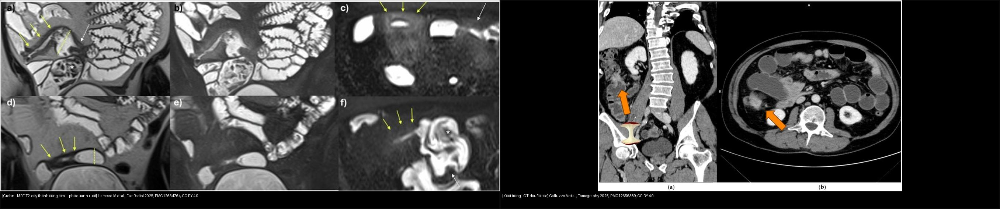
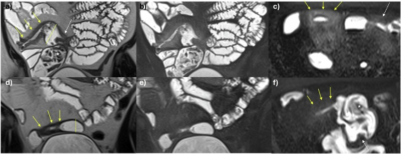
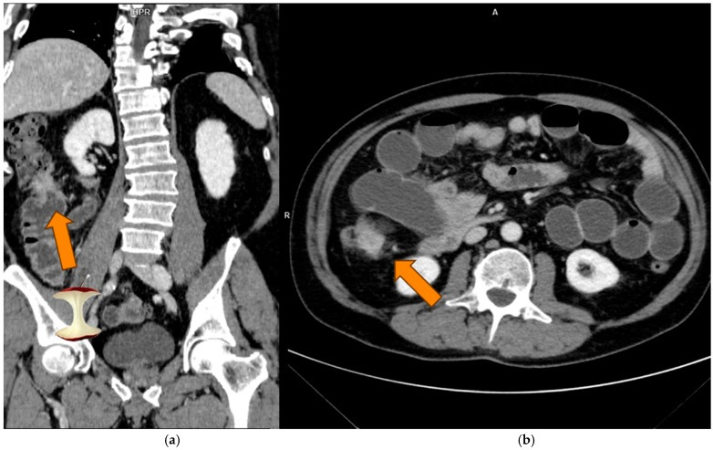
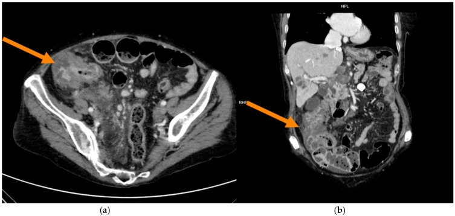
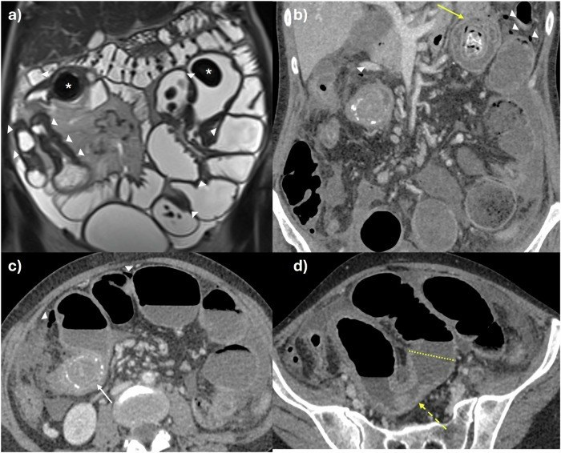

165 — Dày thành ống tiêu hóa: Crohn vs K đại-trực tràng / Wall thickening
Tags: pattern:day-thanh-ruot vung:ruot protocol:CT-MR-enterography
Mức chắc chắn (certainty): tổng hợp y văn (literature synthesis) — nhóm tự biên từ y văn mở; bổ sung ảnh minh họa từ 2 bài CC BY 4.0 (Eur Radiol 2025, Tomography 2025).
1. Tổng quan — 3 câu hỏi + ngưỡng định lượng
- Dày thành (wall thickening) là dấu hiệu chung, không phải chẩn đoán. Ba câu hỏi gỡ rối mọi đoạn dày: (1) đối xứng hay lệch tâm? (2) đoạn dài hay ngắn (< 5 cm)? (3) còn cấu trúc lớp hay mất lớp?
- Ngưỡng định lượng: thành ruột non bình thường ≤ 3 mm khi xẹp; đại tràng ≤ 5 mm khi căng; hạch ≥ 10 mm ngắn trục = nghi bệnh lý; đoạn dày < 5 cm** gợi ung thư; **> 10 cm gợi viêm.
- TẠI SAO lớp quyết định: viêm → phù dưới niêm mạc (nước) giữ các lớp → dấu "bia bắn" (target sign)/phân lớp thành; tăng mạch mạc treo → dấu "lược" (comb sign); mỡ quanh ruột viêm (creeping fat). Ung thư → tế bào xâm lấn phá lớp + tăng sinh xơ → mất phân lớp + bờ vai (shouldering) + lòng hẹp lệch tâm.
- Crohn: dày đối xứng + đoạn dài + giữ lớp + tổn thương nhảy cóc (skip) + biến chứng (rò, áp-xe, hẹp). Viêm loét đại tràng (UC): trực tràng lên liên tục, mất haustra (ống chì lead pipe), dày nhẹ.
2. Gamut dày thành ruột
- Nhóm viêm: Crohn (hồi tràng tận + skip + rò/áp-xe), UC (trực tràng–đại tràng liên tục), viêm túi thừa (đoạn dài, giữ lớp, túi thừa kèm), thiếu máu/viêm ruột do tia (đoạn dài, phù), nhiễm trùng (C. difficile — phù lan, dấu "phím đàn accordion").
- Nhóm ung thư: adenocarcinoma đại-trực tràng (dấu "lõi táo" apple-core), lymphoma (dày lan, khối lớn, hạch lớn), u carcinoid, di căn (mạc treo/ruột).
- Nhóm khác: máu tụ thành ruột (hematoma — chấn thương/kháng đông), phù mạch (angioedema), lồng ruột (intussusception).
- Quy tắc ngón tay: đối xứng + dài + còn lớp = viêm; lệch tâm + ngắn + mất lớp + vai = ung thư.
3. Bảng so sánh phân biệt (ma trận đối chiếu)
| Thực thể (entity) | Hình ảnh điển hình | Chốt vào (rule-in) | Chốt loại (rule-out) | Gợi ý xác nhận |
|---|---|---|---|---|
| Crohn | Hồi tràng tận, đối xứng + đoạn dài + giữ lớp (target) + skip + dấu lược + mỡ quanh ruột + rò/áp-xe | Skip + rò/áp-xe + giữ lớp + đoạn dài | Đoạn ngắn < 5 cm + mất lớp + vai → nghi K | MR/CT enterography + nội soi + sinh thiết |
| Viêm loét đại tràng (UC) | Trực tràng lên liên tục, mất haustra (ống chì), dày nhẹ, loét nông | Liên tục từ trực tràng + mất haustra | Dày lệch tâm khu trú + mất lớp → K | Nội soi (viêm liên tục) + mô bệnh |
| K đại-trực tràng | Dày lệch tâm + đoạn ngắn < 5 cm + mất lớp + bờ vai (apple-core) + hạch + di căn gan | Apple-core + đoạn ngắn + hạch + di căn gan | Đối xứng dài + giữ lớp + skip → Crohn | CEA + CT lồng ngực/bụng (staging) + nội soi |
| Viêm túi thừa | Đoạn dài, giữ lớp, túi thừa thành dày, thâm nhiễm mỡ quanh đại tràng | Túi thừa + đoạn dài giữ lớp + sốt/đau hố chậu trái | Khối khu trú mất lớp → loại trừ K trên nền túi thừa | CT bụng cấp + theo dõi sau đợt |
| Thiếu máu ruột | Đoạn dài, phù thành, tăng quang phúc mạc, mạch mạc treo tắc | Bối cảnh rung nhĩ/hạ huyết áp + đoạn dài tổn thương tương ứng vùng cấp máu | Không tắc mạch + không yếu tố nguy cơ → nghĩ viêm | CTA mạch mạc treo |
| Lymphoma ruột | Dày lan rộng, khối mềm lớn, hạch lớn, ít hẹp lòng | Khối lớn + hạch rổ lớn + ít tắc | Đoạn ngắn + vai → adenocarcinoma | Sinh thiết + hóa mô miễn dịch |

Trái: Crohn trên MR enterography T2 — dày thành đồng tâm, giữ lớp, phù quanh ruột + giãn quai trên chỗ hẹp. Phải: K đại tràng trên CT — khối dày lệch tâm, lòng hẹp bờ vai ("lõi táo"). Nguồn: Hameed M et al., Eur Radiol 2025 (PMC12634764) và Galluzzo A et al., Tomography 2025 (PMC12656389) — CC BY 4.0. Ảnh ghép letterbox, giữ nguyên tỷ lệ.Dấu hiệu chốt then chốt
- Target sign (bia bắn): lớp niêm mạc + dưới niêm mạc phù sáng + cơ tối → viêm hoạt động (Crohn).
- Apple-core + bờ vai: lòng hẹp lệch tâm, bờ nhô ra hai đầu ("vai") → adenocarcinoma.
- Skip lesion: tổn thương cách quãng đoạn lành → Crohn (UC luôn liên tục từ trực tràng).
4. Protocol chụp + quy trình
- MR enterography (MRE): uống 1,5–2 L dung dịch (PEG/mannitol) chia nhiều lần để làm căng lòng ruột; chuỗi T2 (coronal/axial), T2 fat-sat (đánh giá phù), DWI, T1 sau tiêm động học. Đánh giá: thành (dày/mm, phân lớp), mạch mạc treo (comb), mỡ quanh ruột, hẹp (dài/mm), rò/áp-xe.
- CT enterography (CTE): cùng nguyên lý làm căng ruột, thì tĩnh mạch cửa, lát 1–2 mm + MPR.
- Nghi ung thư: CT bụng–chậu có tiêm (thì cửa) + CT lồng ngực để phân giai đoạn; CEA; nội soi + sinh thiết là tiêu chuẩn vàng — hình ảnh không thay được mô bệnh.
- Stricture Crohn (đồng thuận SAR 2025): đo độ dài hẹp, thành (> 3 mm), mức phù/tăng tín hiệu, giãn quai trên, mỡ quanh ruột.
flowchart TD
A[Đoạn ruột dày thành] --> B{Đối xứng + đoạn dài + giữ lớp?}
B -->|Có| C{Skip + rò/áp-xe?}
C -->|Có| D[Crohn -> enterography + nội soi/sinh thiết]
C -->|Không, liên tục từ trực tràng| E[UC -> nội soi + mô bệnh]
C -->|Túi thừa + đoạn dài| F[Viêm túi thừa -> CT cấp + theo dõi]
B -->|Không| G{Lệch tâm + đoạn ngắn < 5 cm + mất lớp + vai?}
G -->|Có| H[K đại-trực tràng -> CEA + CT staging + nội soi]
G -->|Khối lớn + hạch rổ + ít hẹp| I[Lymphoma -> sinh thiết + HMMD]
5. Biến thể bình thường và cạm bẫy
- Ruột xẹp giả dày thành (pseudothickening): luôn đo trên đoạn căng, so sánh đoạn kề; bơm căng lại nếu nghi.
- Crohn xơ hẹp lâu năm giả u: giữ lớp + tiền sử Crohn + tổn thương nhiều đoạn giúp phân biệt.
- Viêm túi thừa giả Crohn: dày đoạn dài giữ lớp — phân biệt bằng túi thừa + tuổi già + đau khu trú hố chậu trái (không skip kiểu Crohn).
- Thiếu máu/angioedema dày lan giả viêm — luôn hỏi bối cảnh (rung nhĩ, thuốc ức chế men chuyển).
- Lymphoma giả Crohn: khối lớn + hạch lớn + ít gây hẹp lòng (khác adenocarcinoma hay gây tắc).
- Satisfaction of search: một khối K ở đại tràng có thể che một tổn thương thứ hai — đọc hết khung, đối chiếu nội soi.
6. Tự lượng giá — Blind Quiz ngay trên trang tĩnh
Ca 1 — Nam 34 tuổi, tiêu chảy mạn, đau hố chậu phải. Nhìn MRE T2, mô tả trước.

- Gợi ý lâm sàng (clinical context): trẻ, tiêu chảy mạn, sụt cân.
- Câu hỏi: dày đối xứng hay lệch tâm? Còn lớp không? 3 chẩn đoán phân biệt và dấu chốt?
Bấm để hiện đáp án (findings + chẩn đoán)
- Dấu hiệu (findings): đoạn hồi tràng tận dày thành đối xứng + giữ lớp (target), phù quanh ruột (mỡ sáng trên T2 fat-sat), giãn quai ruột ngay trên chỗ hẹp → bệnh hoạt động + hẹp.
- Chẩn đoán (diagnosis): Crohn (bệnh hoạt động, hẹp) — vì đối xứng + giữ lớp + phù quanh ruột + giãn quai trên. Xử trí: điều trị sinh học + dinh dưỡng; mổ chỉ khi biến chứng (hẹp tắc, rò).
- Nguồn ảnh: Hameed M et al., Eur Radiol 2025, PMC12634764, Fig. 3, CC BY 4.0.
Ca 2 — Nữ 60 tuổi, thiếu máu, sụt cân, đại tiện ra máu. Nhìn CT dấu "lõi táo", chốt chẩn đoán và việc cần làm tiếp.

- Gợi ý lâm sàng: lớn tuổi, thiếu máu, sụt cân.
- Câu hỏi: dấu hiệu phân biệt với Crohn? Cần khảo sát gì thêm?
Bấm để hiện đáp án (findings + chẩn đoán)
- Dấu hiệu (findings): khối dày lệch tâm, lòng hẹp, bờ vai ("lõi táo"), mất cấu trúc lớp, đoạn tổn thương ngắn.
- Chẩn đoán (diagnosis): adenocarcinoma đại tràng (thể MSI, đại tràng lên) — vì lệch tâm + ngắn + mất lớp + bờ vai. Việc cần làm: CEA + CT lồng ngực/bụng (phân giai đoạn) + nội soi sinh thiết. Khác Crohn: Crohn đối xứng + dài + giữ lớp.
- Nguồn ảnh: Galluzzo A et al., Tomography 2025, PMC12656389, Fig. 2, CC BY 4.0.
Ca 3 — Cùng bối cảnh trên nhưng CT đã có tổn thương gan. Bệnh đang ở giai đoạn nào?

- Gợi ý lâm sàng: đau bụng, sụt cân, men gan bất thường.
- Câu hỏi: nhìn thấy gì ở gan? Ý nghĩa?
Bấm để hiện đáp án (findings + chẩn đoán)
- Dấu hiệu (findings): khối đại tràng "lõi táo" + nhiều nốt gan giảm tỷ trọng (di căn).
- Chẩn đoán (diagnosis): K đại tràng giai đoạn IV (di căn gan) — vì có di căn xa. Đổi chiến lược: hóa trị toàn thân ± sinh thiết phân tử (MSI/RAS/BRAF), cân nhắc cắt gan nếu còn mổ được.
- Nguồn ảnh: Galluzzo A et al., Tomography 2025, PMC12656389, Fig. 3, CC BY 4.0.
Ca 4 — Bệnh nhân Crohn hẹp nhiều đoạn, nhiều năm. Nhìn MRE, mô tả cơ chế và biến chứng.

- Gợi ý lâm sàng: Crohn lâu năm, đau bụng tái diễn, ăn kém.
- Câu hỏi: hẹp dài hay ngắn? Vì sao có nhánh giãn trên chỗ hẹp?
Bấm để hiện đáp án (findings + chẩn đoán)
- Dấu hiệu (findings): hẹp nhiều đoạn, phần lớn dài > 3 cm, thành tín hiệu T2 thấp (xơ mạn), giãn quai trên + sỏi ruột (enterolith) — dấu tắc mạn.
- Chẩn đoán (diagnosis): Crohn hẹp mạn (fibrostenotic) — xơ thành làm hẹp cố định, giãn quai trên. Xử trí: nong bóng/mổ tạo hình hẹp khi tắc; khác hẹp ngắn < 5 cm + mất lớp của ung thư.
- Nguồn ảnh: Hameed M et al., Eur Radiol 2025, PMC12634764, Fig. 6, CC BY 4.0.
Bài liên quan chéo
- 100 – Tổng quan hệ Bụng
- 135 – Viêm tụy cấp (Atlanta)
- 140 – Lách & chấn thương tạng đặc
- 141 – Phúc mạc: carcinomatosis vs lao
- 160 – Bụng cấp GI (viêm túi thừa)
- 162 – Tắc ruột (hẹp Crohn gây tắc)
Ảnh
- 4 ảnh CC BY 4.0 (Eur Radiol 2025 ×2, Tomography 2025 ×2) + 1 ảnh ghép CC BY 4.0. Nguồn + giấy phép từng ảnh trong
images/CREDITS.md.
Không dùng để chẩn đoán độc lập khi chưa có người hướng dẫn.